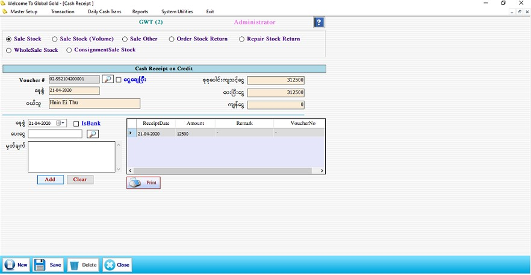

Cash Receipt On Credit Setup

- အကြွေးပြန်ဆပ်ခြင်းမှ ရငွေများကိုသတ်မှတ်ရန်အတွက် Transaction အောက်မှ Cash Receipt on Credit ကို ဖွင့်ပါ။
- Sale Stock, Sale Stock(Volume), Sale Order, Order Stock Return, Repair Stock Return, WholeSale Stock, ConsigmentSale Stock အစရှိသော Form များတွင် အကြွေး/ကျန်ငွေ ရှိနေပါက ဘောက်ချာအလိုက်အကြွေးဆပ်နိုင်သော Form ဖြစ်ပါသည်။
- မိမိ အသုံးပြုမည့် Form ကိုရွေးချယ်ပါ။ Sale Stock, Sale Stock(Volume), Sale Order, Order Stock Return, Repair Stock Return, WholeSale Stock, ConsigmentSale Stock စသည်ဖြင့်အကြွေးဆပ်လိုသော Form ကိုရွေးချယ်ပါ။
- Sale Stock ကိုရွေးချယ်ပါက Vocher # ၏ ဘေးတွင်ရှိသော မှန်ဘီလူး ကိုနှိပ်ပြီး မိမိပေးရမည့် Voucher ကိုရွေးချယ်ပါ။ ထိုသို့ရွေးလိုက်သည်နှင့် နေ့စွဲ၊ ရောင်းသူ၊ စုစုပေါင်းကျသင့်ငွေ၊ ပေးပြီးငွေ၊ ကျန်ငွေတို့ကို ဖော်ပြပေးပါလိမ့်မည်။
- ထို့နောက် နေ့စွဲတွင် Date ကိုရွေးချယ်ပါ။ ပေးငွေတွင် ဝယ်သူကပေးချေမည့် ငွေပမာဏကို ဖြည့်စွက်ပါ။ လိုအပ်ပါက မှတ်ချက်တွင် ဖြည့်စွက်နိုင်ပါသည်။ ပြီးလျှင် Add Button ကိုနှိပ်ပြီး Data များကို သိမ်းဆည်းပါ။
- Add လုပ်ထားသော Data များမှားယွင်းနေပါက ဘေးရှိ Grid မှ မိမိပြင်ဆင်လိုသော Row ၏ ရှေ့ဆုံးကိုနှိပ်ပါက သက်ဆိုင်ရာ Row ၏ Data များကို ပြန်လည်ပြင်ဆင်နိုင်မည်ဖြစ်သည်။ပြီးနောက် Update Button အားနှိပ်ပါ။
- Data များဖြည့်ပြီးပါက Save Button ကိုနှိပ်၍ သိမ်းဆည်းနိုင်ပါသည်။
- သိမ်းဆည်းပြီးသား Data များအား ပြန်လည်ကြည့်ခြင်း၊ ပြင်ဆင်ခြင်းများပြုလုပ်ချင်ပါက Voucher # ၏ ဘေးတွင် ရှိသော မှန်ဘီလူး button ကိုနှိပ်ပြီးပြန်လည်ကြည့်ရှုပြင်ဆင်ချင်သော Voucher အား ရွေးချယ်ပြီးပြင်နိုင်ပါသည်။
- ငွေအကျေ ချေပြီးသားဘောက်ချာကို ပြန်လည်ကြည့်ရှုခြင်း(သို့) ပြန်လည်ပြင်ဆင်ချင်ပါက ငွေချေပြီး ဟုရေးထားသော checkbox ကိုနှိပ်ပြီးပြန်ရှာနိုင်ပါသည်။
- သိမ်းဆည်းပြီးသား ထည့်ပြီးသား Data များကို ဖျက်လိုလျှင် မှန်ဘီလူး button အားနှိပ်ပြီးရှာပါ။ ထို့နောက် မိမိဖျက်လိုသော Data ကို Delete Button ကိုနှိပ်၍ ဖျက်နိုင်ပါသည်။
- Cash Receipt Voucher အသစ်ထည့်လိုပါက New Button ကိုနှိပ်ပြီး အသစ်ထည့်နိုင်ပါသည်။
- Cash Receipt on Credit Form အား အသုံးပြုပြီးပါက Close Button ကိုနှိပ်၍ ပိတ်နိုင်ပါသည်။